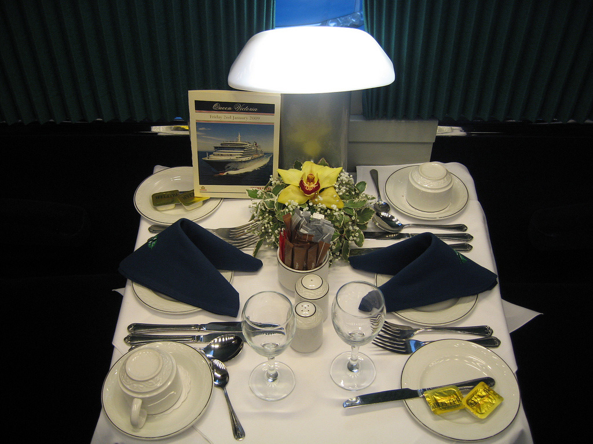
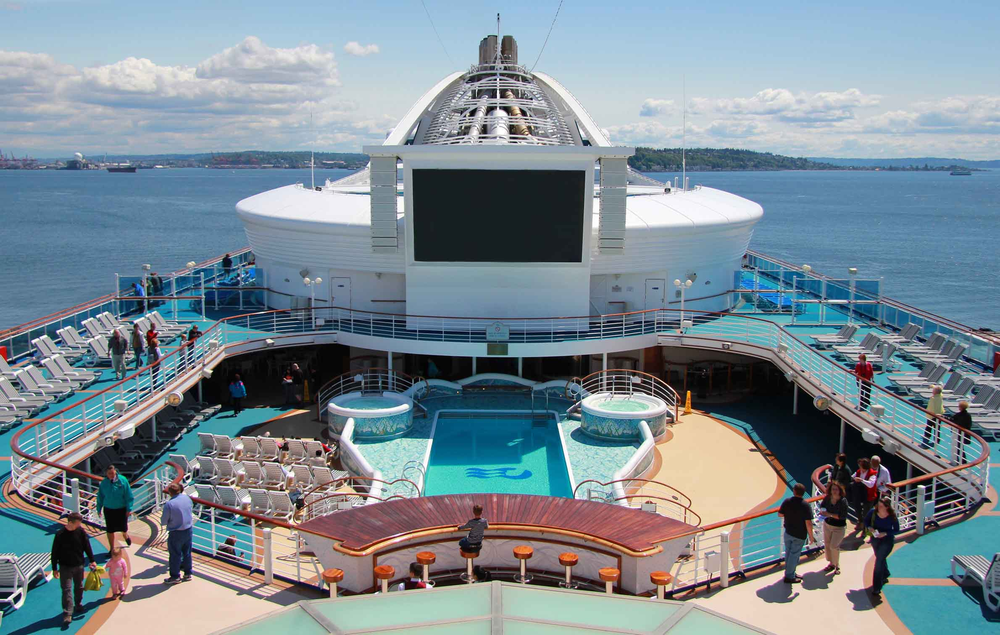
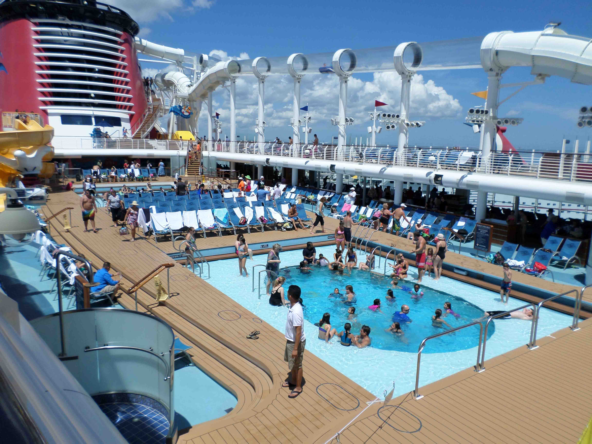
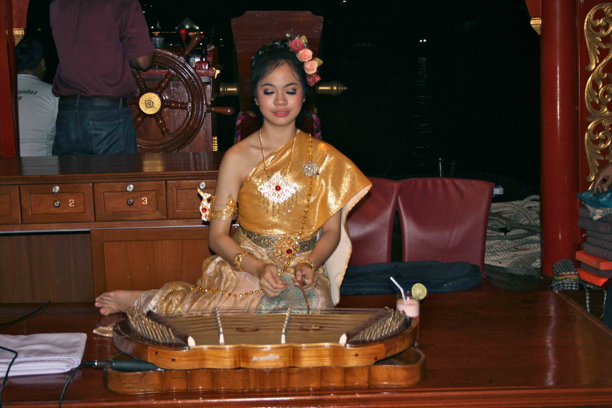
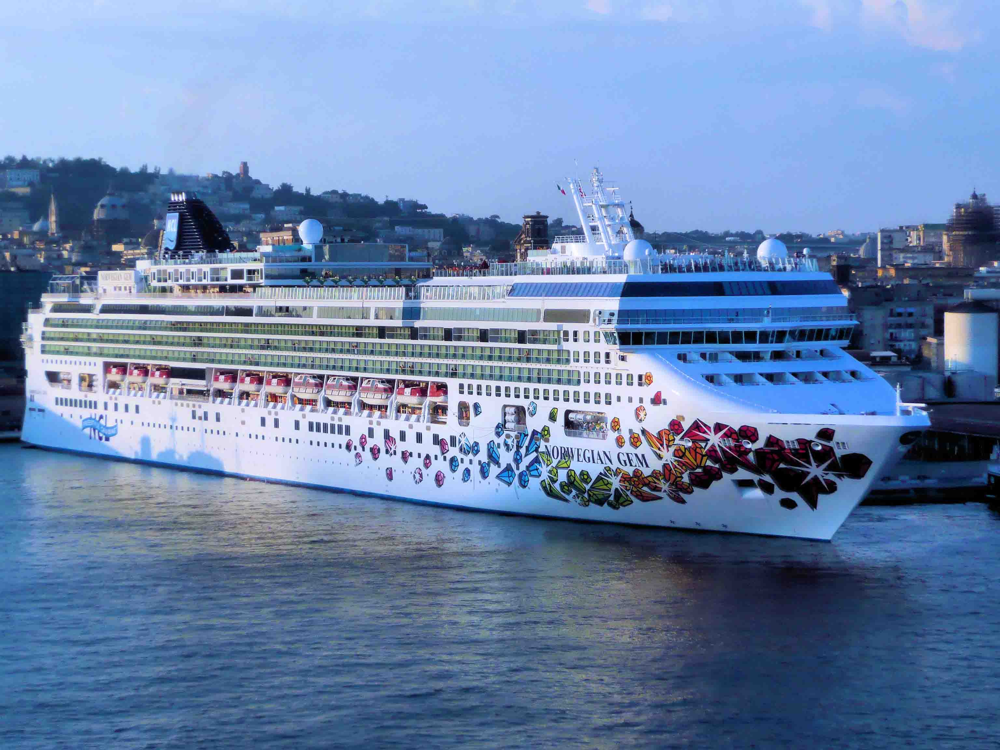
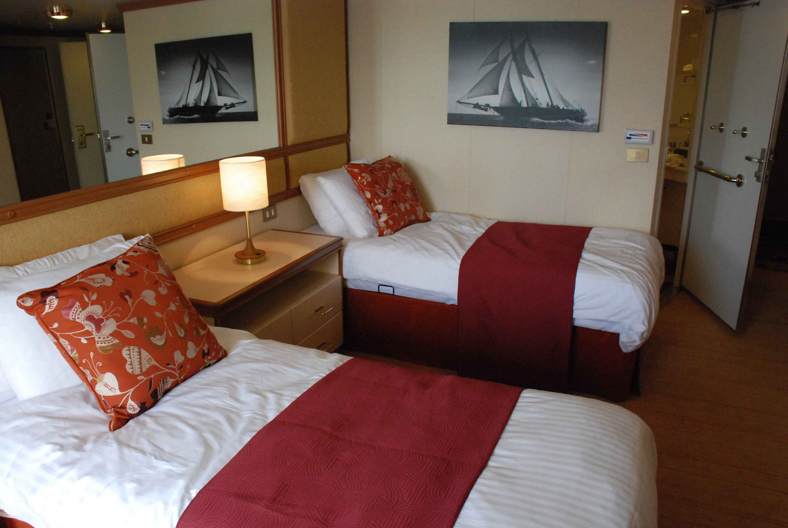
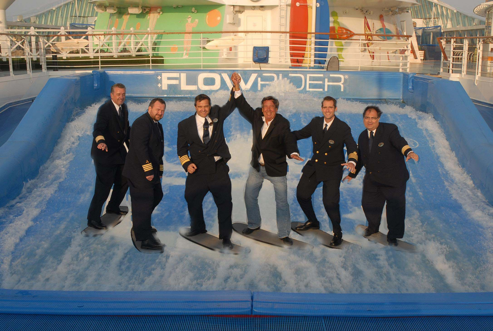

|
|
Dining Opportunities |
|  |
Affinity Cruise Ships offer a variety of dining options. For every guest a basic meal plan is included and gives guests unlimited access to the food court. However, there are many other restaurants on board the ship that guests can reserve. Some of these include: Captains Diner, Guy's Burger Joint, Aqualina, Tuscan Grille, and Ocean Blue. All of these restaurants feature a difference and delicious menu. Beyond that there are food shops on board that do not require reservations such as Starbucks and Baskin Robins. |
Shore Excursions |
|
Our Cruise ships have four different ports of call each with fun to be had and things to experience. First you would start in the sunny destination of Port Canaveral, Florida where you will be departing from. Port Canaveral has many different areas to explore. On shore, you could go to the Dolphin, Manatee, and Wildlife Encounter. This tour allows you to discover the ecosystem in the endangered estuary in a pontoon boat where various aquatic mammals are encountered. The next stop on your journey would be Nassau, Bahamas where there are many beaches to explore. A popular attraction is the Rainbow Reef Snorkel Tour. On this tour, you will be taken to the Sea Gardens of Athol Island via boat. From there, you will scuba dive to experience the coral reefs and various aquatic life first hand. Your third stop will be CocoCay, Bahamas where there are more beaches and activities to unwind and spend time with your loved ones. The CocoCay Wave Jet Tour is a great way to experience all that CocoCay has to offer in a fun and convenient tour which visits various sights in CocoCay including Great Stirrup Cay Lighthouse, Starfish Alley, and many more. The final stop is once again in Port Canaveral, Florida where your journey will come to an end. |
 |
Fun on the Ship |
|  |
The ship has nearly endless activities to participate in and numerous activity areas. On board we have a miniature golf course, basketball court, rock climbing wall, Flowrider surfing, ice skating, and many more! |
Entertainment |
|
Entertainment: Onboard we have a number of various entertainment options. We have theatre productions that include Broadway, ice, aqua theater, centrum aerial shows, and other original productions. Also, we have musical performances from a live orchestra and various guest entertainer. |
 |
Ship specifications |
|  |
Our ships hold up to 4,000 guests with over 2,000 rooms, 16 guest decks, and can travel up to 22 knots. This allows for a lot of room for your family and many great attractions. These dimensions allow for plenty of room for all kinds of fun activities. The speed allows you to experience all the ship has to offer in between ports. With so many decks to discover, your journey through the ocean will certainly be an exciting one with all different activities to do on each deck. |
Competitive Pricing |
|
We offer flexible pricing with many different options to choose from. We work with your budget to make your dream vacation reality. We offer family packs and individual rates to make your stay with us as memorable as possible. Start building family memories in the most relaxing place in the world today. |

|
Cabins on Board |
|  |
Our cabins come in various options to fit everyone’s needs and budget. The first option for living situations is the Inside plan. The Inside plan offers a basic level of luxury with amenities that include, TV and refrigerator and a sitting area. The next plan up is called Ocean View. This plan offers the same as the Inside plan but with an ocean view. The next plan up is called Balcony. This plan offers amenities such as, fine linens and coffee and tea setup. The next plan up is called Mini-Suite. This plan offers a private balcony, a memory foam bed, and much more. The next plan is called the Suite. This plan adds an espresso machine and butler service. The next plan is called the Premium Suite. This includes gourmet treats, a feather duvet, and much more. |
Our Friendly Staff |
|
We have a group of happy staff standing by to make sure that your stay with us will be as enjoyable as possible. Our staff are always ready to serve you day or night. They will always greet you with a smile and be ready and willing to help you in whatever way possible. Our staff is standing by 24/7 to ensure that your journey with us will be one that you will never forget. |
 |
|
Affinity Travels Agency |
|
© Copyright Affinity IT Squad web design powered by Overflow System |